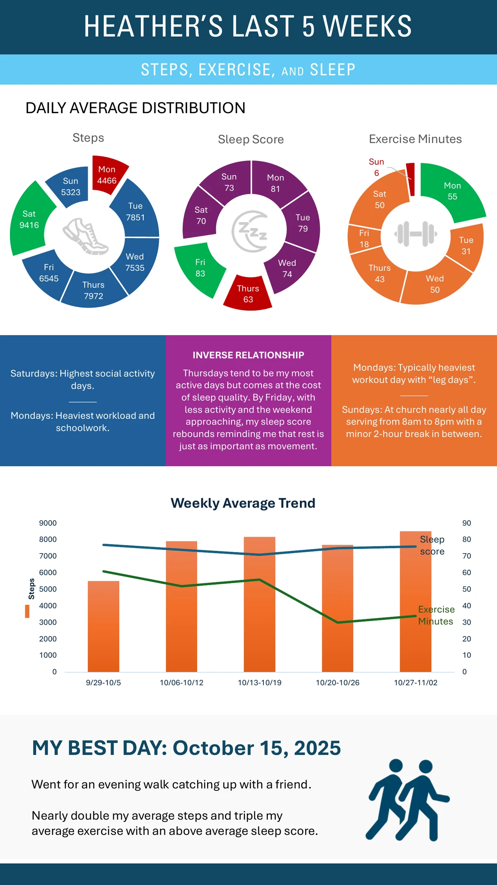

01
Connecting the numbers to real life
Charts alone don't tell a story, so I annotated each one with what was happening that day: leg days on Mondays, serving at church on Sundays, and busy Thursdays followed by my poorest sleep.
Data Visualization
A one-page infographic that turns five weeks of my own step, sleep, and exercise data into a story about how the rhythm of my week shapes how I move and rest.
Data Visualization • Data Storytelling • Information Design

Reading the Infographic
| Day | Steps | Sleep score | Exercise min |
|---|---|---|---|
| Monday | 4,466 (low) | 81 | 55 (high) |
| Tuesday | 7,851 | 79 | 31 |
| Wednesday | 7,535 | 74 | 50 |
| Thursday | 7,972 | 63 (low) | 43 |
| Friday | 6,545 | 83 (high) | 18 |
| Saturday | 9,416 (high) | 70 | 50 |
| Sunday | 5,323 | 73 | 6 (low) |
Problem
How does the rhythm of my week, with work, school, church, and social time, shape how much I move and how well I sleep?
Approach
I collected five weeks of step, sleep, and exercise data from a fitness tracker, analyzed it in Excel, and designed a one-page infographic.
Result
The data revealed an inverse pattern: Thursday was my most active weekday but had my lowest sleep score, while Friday rebounded to my highest.
5
Weeks of data
3
Data types
63 to 83
Sleep score range
Tools Used
Design Rationale
01
Charts alone don't tell a story, so I annotated each one with what was happening that day: leg days on Mondays, serving at church on Sundays, and busy Thursdays followed by my poorest sleep.
02
I gave each data type its own color (blue for steps, purple for sleep, orange for exercise) and used green and red to mark highs and lows, so readers can spot patterns without decoding a legend.
03
Because this was my own health data, I shared daily and weekly averages instead of raw logs, which kept the story clear and my details private.
Keep Exploring
Browse job aids, data stories, and communication strategy projects, or get in touch to talk about your next adoption challenge.